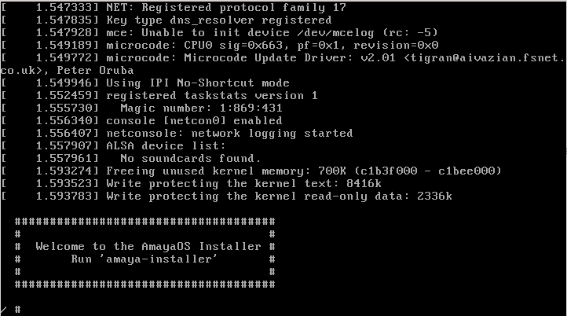
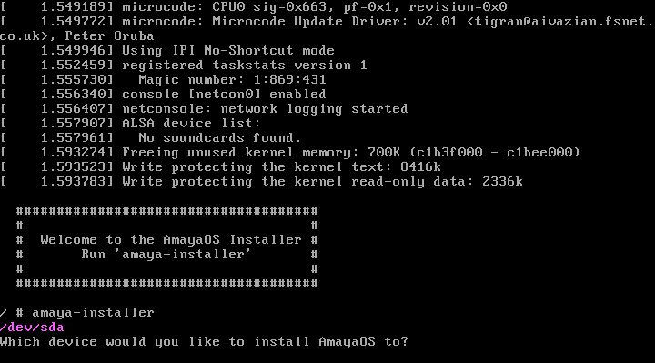
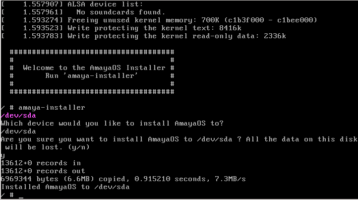

Guía de instalación
Welcome to the AmayaOS Installation Guide! This document will help you to install AmayaOS into your hard disk step by step in just a few minutes.
Get AmayaOS
First of all we have to get a copy of an AmayaOS installation image. For that we can download a precompiled image or compile the installation image source code (not recommended for newbies). Then we have to burn the ISO file to a CD, DVD, USB or emulate it into a virtual machine.
Running the Installation Image
We have to turn on our computer with the installation medium marked as default on boot sequence. In the case we are using a virtual machine we have to load the ISO file and create a virtual hard disk for the system (This depends on the emulator we are using). If all is going correctly we will get a screen like in the following image:

Running the installer
We have to execute the AmayaOS installer by typing "amaya-install" into the shell. Then, we will get a screen in which we will have to choose the hard disk or partition in which we want to install AmayaOS:

We type "/dev/sda" and press 'ENTER' to install in the whole disk. Then the installer will ask if we are sure to install in that disk or partition. All previous data will be removed. Just press "y" ("n" if you want to cancel the installation process) and in a few seconds the process will finish to install AmayaOS in your hard disk.

Now, just type "poweroff" or "reboot" and remove the installation medium or change the boot sequence to enable the hard disk boot and then your computer or virtual machine will start as default with the Amaya Operating System